歡迎來到 PHP雲端ERP 的世界
PHP 是開發 雲端ERP 應用程式的工具組。提供簡易的介面和邏輯結構來使用豐富的函式庫，其目的是讓你加 快開發速度。使用 PHP 只需要寫少少的程式，創造力可專注在專案開發。
雲端ERP 使用手冊目錄
貳、基本資料建立
一、基本資料管理系統之關聯作業
1.部門資料建立作業
■作業目的：依公司的組織架構賦予部門代碼，做為資料區隔管理及財務費用的歸屬。
■輸入畫面：
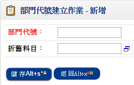 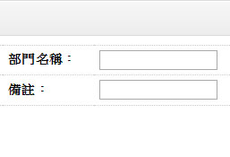- ■作業重點：
- 如無『固定資產管理系統』,折舊科目可不輸入;因折舊科目為當固定資產分攤方式依部門管理分攤時之科目依據
2.幣別匯率建立作業
■作業目的：本系統所使用到的所有幣別，先於本作業定義幣別代號及統一標準匯率。
■輸入畫面：
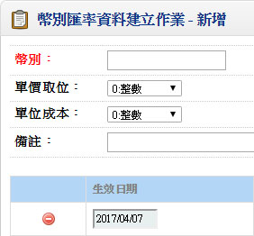 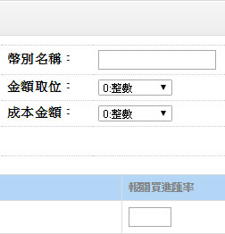- ■重要欄位說明：
- 單價取位
- 欄位不可空白，指的是訂單銷貨時及採購進貨時，此種幣別的取位方式，如訂單S$ 設為小數二位，當單價為4.536 時則會取位成4.54 元。
- 金額取位
- 欄位不可空白，指訂單銷貨及採購進貨「單筆」金額的取位方式（單價×數量）
- 單位成本取位
- 欄位不可空白，指庫存單位成本的取位方式，目前只有台幣即「共用參數設定」中定義的本國幣別有意義，其餘沒有功能，一般而言均為小數二位。
- 成本金額取位
- 欄位不可空白，指庫存成本的取位方式，用單位成本取位只有本國幣別有效，一般設定為整數
- 生效日期
- 欄位不可空白，指此筆匯率的生效期間，如果您有外幣管理在預設匯率時，系統將判生效日期的有效性。
- 銀行買進匯率
- 訂單系統及應收帳款系統於打單時（報價單、客戶訂單、銷貨單、銷退單、結帳單）所用的預設匯率。
- 銀行賣出匯率
- 採購系統及應付帳款系統於打單時（核價單、採購單、進貨單、退貨單、應付憑單）所用的預設匯率。
- 報關買進匯率
- 出口系統所用的預設匯率
- 報關賣出匯率
- 進口系統所用的預設匯率
3.職務類別建立作業
■作業目的：生管／採購／業務／會計／出納職能群組人員建立，為了方便將來異動單據（訂單／銷貨單／採購單／…）的資料輸入，應於本作業中先行定義各大的職務職能之使用者。
■輸入畫面：
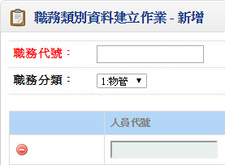 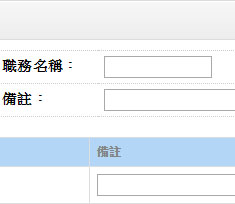- ■作業重點：
- 上線前務必將人員的工作職能先行定義，系統在資料處理時做了些許管制，例如：在訂單性系統，要查詢業務人員時，若未定義業務的使用人員，無法開窗，且無法輸入業務人員
- 以下關於各種人員的權責範圍。
- 物管：領料單輸入
- 生管：製令開單人員
- 業務：報價單／客戶訂單／銷貨人員／收款人員
- 採購：採購單輸入／託外加工單的輸入
- 會計：傳票處理人員
- 出納六種：應收票據／應付票據／銀行存提作業處理人員
- 本系統允許同一個人扮演不同的角色。
4.交易對象分類建立作業
■作業目的：為了強化客戶及廠商的分類及型態管理，本系統提供通路、型態、地區、國家、路線、其它、抽成、活動、廠商分類九種分類，可做為客戶及廠商型態的定義，針對九種分類可於本作業中再詳分細目，這些分類將來可做為銷售分析或相關統計報表的篩選條件。
■輸入畫面：
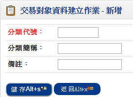 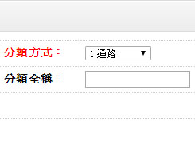- ■作業重點：
- 系統上線前請先規劃各種分類方式的編碼原則，並將現行所有客戶及廠商進行分類歸屬，以利「客戶資料建立作業」或「廠商資料建立作業」時相關資料的輸入
- 若基於產業別或客戶之管理，無需定義九種全部，可由使用者選擇重要的分類方式或管理的分類進行資料的建檔
5.註記/簽核資料建立作業
■作業目的：對於本系統所提供的憑證列印（報價單、客戶訂單變更單、銷貨單、銷退單），是可由使用者自訂其簽核序程序（經理核准、主任核准、製表）及憑證表尾的註記，如銷貨單上註明：出貨商品超過三天恕不退貨等。請先將常用的註記及簽核格式編碼於本作業建檔。
■輸入畫面：
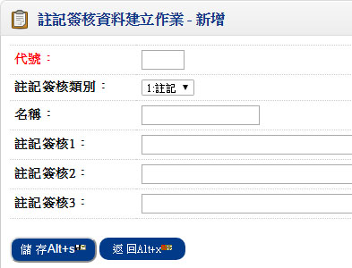6.付款條件建立作業
■作業目的：對於廠商之採購/託工和客戶之銷售後之預計收(付)款日.資金實現日.取得折扣方式可設定付款條件。
■輸入畫面：
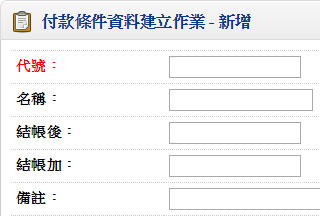 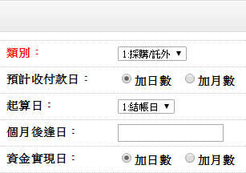- ■作業重點：
- 銷售日期:2001/7/10
結帳日期:每月25日
預計收款日:加月數,結帳加1個月後逄5日
資金實現日:加月數,付款加2個月後逄5日
取得折扣方式:縮短票期,票期需提早30天兌現,折扣10% - 結果—結帳日:20001/7/25
預計收款日:2001/09/05
資金實現日:2001/11/05
取得折扣兌現日:2001/10/05
二、訂單管理系統的基本資料
1.客戶資料建立作業
■程式代號：COPI01
■程式名稱：客戶基本資料建立作業
■作業目的：客戶基本資料建檔、修改及資料刪除。
■輸入畫面：
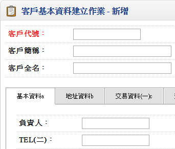 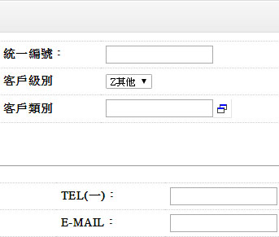- ■重要欄位說明：基本資料
- 總店號、總公司請款
- 總店號不為空白時，才可輸入「總公司請款」
- 表示應收帳款結帳時，分店之應收帳款都歸於總公司
- 交易幣別
- 不可空白，預設「共用參數─本國幣別」
- 歇業日期
- 於報價單.訂單.訂單變更單.銷貨單.出貨通知單建立作業,當異動日期>歇業日期時不可交易
- 客戶商品計價建立.客戶品號資料.銷售預測建立.銷退單建立作業,當異動日期>歇業日期時會出現警告
▼
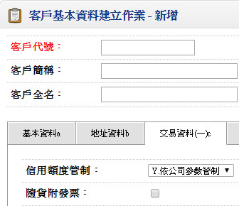 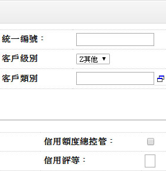- ■重要欄位說明：交易資料(一)：
- 信用額度依總公司控管
- 客戶信用額度的控管檢查, 針對總分店型態的客戶, 信用額度可以由總店來設定總額度, 而各分店接訂單及銷貨時, 可由總公司額度來控管
- 若信用額度依總公司控管且總店號不為空白,信用額度及可超出額度以總公司資料為主
- 信用額度管制
- Y:依公司參數管制:依「信用控制參數設定作業」管制信用額度
N:信用額度不管制:不管制信用額度。
y :依客戶資料管制:依「客戶資料建立作業」之信用控制參數設定管制信用額度。 - 對信用查核超限處理方式可選擇不檢查.警告或拒絕
- 信用額度管制表示在訂單或銷貨時，如果信用額度超過時，不允許訂單或銷貨單的輸入。
- 信用額度.可超出率%
- 若信用額度管制＝'V'（需管制）此欄位才能輸入。
- 輸入值必須大於等於零
- 輸入與顯示時為×100.0 存入時除以100
例:50% 存入值為 0.5000 - 稅額計算方式
- 整張資料計算:計算稅額時以整張單據之總金額計算
如：一銷貨單，A料金額為111元，B料金額111元，稅額則為11元。 - 單身單筆資料計算:計算稅額時以單身單筆逐筆計算
如：一銷貨單，A料金額為111元，B料金額111元，稅額則為12元。 - 銷售評等.信用評等
- 可空白，註記欄位,可由人工維護
- 銷售評等可由銷售分析系統之「客戶ABC分析表」更新
- 付款條件
- 配合付款條件的設定,可依結帳日期推算預計收(付)款日.資金實現日和取得折扣方式
- ■重要欄位說明：交易資料(二)：
- 交易對象分類方式
- 可區分通路別、型態別、地區別、國家別、路線別、其他別
- 可空白，輸入時必須存在於「交易對象分類資料檔」
- 產生報表時可依分類方式為報表篩選條件
- 最近交易日
- 可空白，本欄位可由銷貨單確認來更新
- 結帳日期
- 可空白，若輸入時必須在1～31
- 此欄位為應收帳款管理系統需求欄位，對某些客戶來說規定請款的週期，譬如以26日為截止點，即上月27日至本月26日間的銷貨，可於月底請款，我們稱此種結帳方式為依客戶結帳日期結帳，請你於本欄位輸入結帳日
- 取價順序、折扣率
- 不可空白,即報價單、客戶訂單、受訂時銷售單價的預設方式
- 折扣後單價=折扣前單價×折扣率
- 付款銀行、銀行帳號
- 可空白，輸入時必須存在『全省金融機構資料』
- 於應收票據輸入時預設之客戶開票銀行
- 帳款科目、票據科目
- 可空白，輸入時表示客戶應收帳款.應收票據的明細科目代號，此科目不得為統制帳戶，一般應收帳款如果區分到客戶別，則應於本欄位明訂，如果只有一個彙總科目，則無須輸入
- 本欄位為自動分錄系統需求資料
2.單據性質設定作業
■程式代號：COPI03
■程式名稱：單據性質設定作業
■作業目的：訂單系統使用之報價單、客戶訂單、銷貨單、銷退單單據的代號名稱及單據特性建檔。
■輸入畫面：
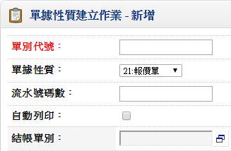 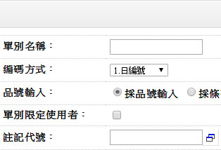- ■重要欄位說明：
- 單別
- 不可空白，本產品的所有系統、單別代號均不可重複
- 單據性質
- 不可空白，共分21.報價單、22.客戶訂單、23.銷貨單、24.銷退單、25.營業日報五種性質
- 編碼方式
- 不可空白，計分1.日編號、2.月編號、3.流水號、4.手動編號四種
- 年碼數
- 編碼方式為日編或月編才需輸入，其餘不可輸入且預設為0
- 日編或月編：年碼數須大於0
- 日編：年碼數＋4（4碼表MMDD）＋流水號碼數 不可大於11碼
月編：年碼數＋2（2碼表MM）＋流水號碼數 不可大於11碼 - 年碼的呈現為西元年或民國年需配合「共同參數設定-日期格式」
- 流水號碼數
- 年碼數及流水號碼數輸完時，需顯示出編碼格式
例:YYMMDD999、YYMM99999、999999999、YYYYMMDD999（西元年四碼）、YYYMMDD9999（民國年三碼） - 品號輸入方式
- 不可空白，計分1.採品號輸入、2.採條碼輸入二種，指單據建立時品號輸入的方式
- 自動確認
- 單據的預設為非自動確認，直接確認的意思表示輸入完單據存檔後，該單據馬上生效;對訂單而言，業務人員輸入訂單後，馬上會進入已訂未銷量；銷貨單輸入後會立刻扣除庫存帳,造成庫存減少
- 若單據輸入的人員與核准的人員不同人，比如說核准的人員為營業課長，那單據分兩段生效，則須設為非自動確認
- 自動列印
- 單據輸入完後是不是馬上由印表機將打完的單據列印出來稱為『直接列印』，若是等所有單據一起打完後再下指令將單據一起列印出來稱為『批次列印』
- 單別限定輸入使用者
- 設定指定之使用者才可使用此單別輸入
- 更新核價
- 表本單據可不可以更新客戶商品計價資料，其中僅單據性質 21.報價單、22.客戶訂單、23.銷貨單，可輸入預設「Y」，其餘不可輸入
- 如果客戶銷貨的品號有分量計價的管理需求，建議只『21'(報價單據)』設為更新核價
- 核對訂單
- 僅單據性質 23.銷貨單、24.銷退單可輸入「Y」，其餘跳過不可輸入「N」
- 指輸入銷貨單及銷退單時，是不是一定要輸入訂單單號，如果您屬於訂單銷貨時，銷貨單應該核對訂單，如果屬於零售業，一般來說立即銷貨，則請不要核對訂單，當然最保險的作法是分成二種銷貨單，一種為管制訂單，一種為不核對訂單
- 銷退單一般設為不須核對訂單，因為銷退貨品如果沒有做好銷貨的識別管理，銷退時是很難追溯銷貨來源，甚至訂單的，所以可設為不核對訂單
- 直接結帳
- 定義銷貨單及銷退單產生客戶帳單的方式，如果每輸入完一張銷貨單即產生一張對應的結帳單（客戶請款單），我們稱為直接結帳，如此請您輸入〔結帳單別〕
- 一般屬於隨貨送發票或現金銷售行為者屬之
- 若客戶的帳款採月結或時段結算就非直接結帳特性
- 僅單據性質 23.銷貨單、24.銷退單可輸入，其餘性質跳過不可輸入
- 註記代號
- 可空白
- 列印時修改註記
- 此功能在於對先前所設該單據的註記代號內容，在憑證列印時可不可以修改
- 一般銷退單可設為修改註記，你可在註記上記錄銷退事項
- 一般銷貨單可設為修改註記，你可在註記上記載銷貨須聲明事宜
- 簽核代號
- 可空白
- 列印時修改簽核
- 此功能在於對先前所設該單據的簽核代號內容，在憑證列印時可不可以修改
- 自動產生發票號碼
- 單據性質=銷貨單時可設定
- 自動產生發票號碼=Y時,「每月發票資料建立作業」必須存在,發票賦予編號時可先選擇發票順序,當銷貨單確認時可由電腦自動給予發票號碼
- 每頁列印合計
- 當一張傳票內容列印多於1張傳票時，可選擇是否每頁皆列印合計數
3.客戶商品計價建立作業
■程式代號：COPI02
■程式名稱：客戶商品計價建立作業
■作業目的：凡客戶報價、受訂銷售時均於事前約定單價，以此單價為異動的預設值或基本，可由本作業對客戶商品的單價進行建檔。
■輸入畫面：
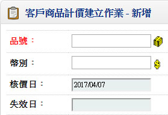 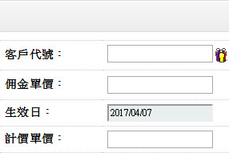- ■重要欄位說明：
- 分量計價
- 非分量計價者，單身不可做任何輸入或修改動作。
- 含稅
- 所設定的單價為含稅或未稅價。
- 核價日
- 預設系統日期，可修改。
- 若本資料由報價單或訂單或銷貨單更新時，則本欄位為單據異動的日期。
- 初次交易日
- 可空白，可由第一次銷貨單核准時更新，或由資料建立人員直接輸入。
- 上次銷貨日
- 可空白，由銷貨單核准時更新。
- 折扣率
- 輸入與顯示時為×100.0 存入時除以100。
例:50% 存入值為 0.5000。